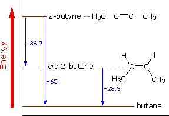
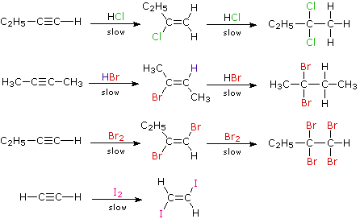
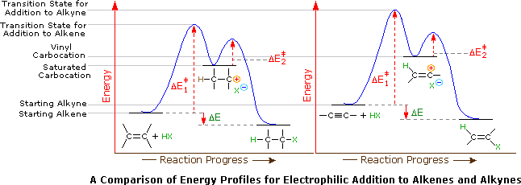
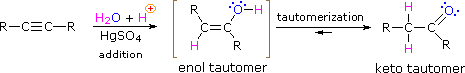
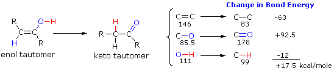
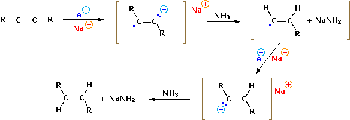
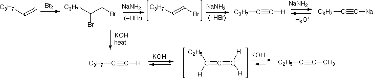
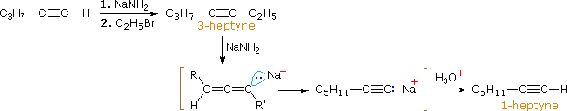

A carbon-carbon triple bond may be located at any unbranched site within a carbon chain or at the end of a chain, in which case it is called terminal. Because of its linear configuration ( the bond angle of a sp-hybridized carbon is 180º ), a ten-membered carbon ring is the smallest that can accommodate this function without excessive strain. Since the most common chemical transformation of a carbon-carbon double bond is an addition reaction, we might expect the same to be true for carbon-carbon triple bonds. Indeed, most of the alkene addition reactions discussed earlier also take place with alkynes, and with similar regio- and stereoselectivity.
The catalytic addition of hydrogen to 2-butyne not only serves as an example of such an addition reaction, but also provides heat of reaction data that reflect the relative thermodynamic stabilities of these hydrocarbons, as shown in the diagram to the right.

Alkenes and alkynes show a curious difference in behavior toward catalytic hydrogenation. Independent studies of hydrogenation rates for each class indicate that alkenes react more rapidly than alkynes. However, careful hydrogenation of an alkyne proceeds exclusively to the alkene until the former is consumed, at which point the product alkene is very rapidly hydrogenated to an alkane. This behavior is nicely explained by differences in the stages of the hydrogenation reaction. Before hydrogen can add to a multiple bond the alkene or alkyne must be adsorbed on the catalyst surface. In this respect, the formation of stable platinum (and palladium) complexes with alkenes has been described earlier. Since alkynes adsorb more strongly to such catalytic surfaces than do alkenes, they preferentially occupy reactive sites on the catalyst. Subsequent transfer of hydrogen to the adsorbed alkyne proceeds slowly, relative to the corresponding hydrogen transfer to an adsorbed alkene molecule. Consequently, reduction of triple bonds occurs selectively at a moderate rate, followed by rapid addition of hydrogen to the alkene product. The Lindlar catalyst permits adsorption and reduction of alkynes, but does not adsorb alkenes sufficiently to allow their reduction.
When the addition reactions of electrophilic reagents, such as strong Brønsted acids and halogens, to alkynes are studied we find a curious paradox. The reactions are even more exothermic than the additions to alkenes, and yet the rate of addition to alkynes is slower by a factor of 100 to 1000 than addition to equivalently substituted alkenes. The reaction of one equivalent of bromine with 1-penten-4-yne, for example, gave 4,5-dibromo-1-pentyne as the chief product.
Although these electrophilic additions to alkynes are sluggish, they do take place and generally display Markovnikov Rule regioselectivity and anti-stereoselectivity. One problem, of course, is that the products of these additions are themselves substituted alkenes and can therefore undergo further addition. Because of their high electronegativity, halogen substituents on a double bond act to reduce its nucleophilicity, and thereby decrease the rate of electrophilic addition reactions. Consequently, there is a delicate balance as to whether the product of an initial addition to an alkyne will suffer further addition to a saturated product. Although the initial alkene products can often be isolated and identified, they are commonly present in mixtures of products and may not be obtained in high yield. The following reactions illustrate many of these features. In the last example, 1,2-diodoethene does not suffer further addition inasmuch as vicinal-diiodoalkanes are relatively unstable.

As a rule, electrophilic addition reactions to alkenes and alkynes proceed by initial formation of a pi-complex, in which the electrophile accepts electrons from and becomes weakly bonded to the multiple bond. Such complexes are formed reversibly and may then reorganize to a reactive intermediate in a slower, rate-determining step. Reactions with alkynes are more sensitive to solvent changes and catalytic influences than are equivalent alkenes. For examples and a discussion of mechanisms click here.
Why are the reactions of alkynes with electrophilic reagents more sluggish than the corresponding reactions of alkenes? After all, addition reactions to alkynes are generally more exothermic than additions to alkenes, and there would seem to be a higher π-electron density about the triple bond ( two π-bonds versus one ). Two factors are significant in explaining this apparent paradox. First, although there are more π-electrons associated with the triple bond, the sp-hybridized carbons exert a strong attraction for these π-electrons, which are consequently bound more tightly to the functional group than are the π-electrons of a double bond. This is seen in the ionization potentials of ethylene and acetylene.
As defined by the preceding equations, an ionization potential is the minimum energy required to remove an electron from a molecule of a compound. Since pi-electrons are less tightly held than sigma-electrons, we expect the ionization potentials of ethylene and acetylene to be lower than that of ethane, as is the case. Gas-phase proton affinities show the same order, with ethylene being more basic than acetylene, and ethane being less basic than either. Since the initial interaction between an electrophile and an alkene or alkyne is the formation of a pi-complex, in which the electrophile accepts electrons from and becomes weakly bonded to the multiple bond, the relatively slower reactions of alkynes becomes understandable. A second factor is presumed to be the stability of the carbocation intermediate generated by sigma-bonding of a proton or other electrophile to one of the triple bond carbon atoms. This intermediate has its positive charge localized on an unsaturated carbon, and such vinyl cations are less stable than their saturated analogs. Indeed, we can modify our earlier ordering of carbocation stability to include these vinyl cations in the manner shown below. It is possible that vinyl cations stabilized by conjugation with an aryl substituent are intermediates in HX addition to alkynes of the type Ar-C≡C-R, but such intermediates are not formed in all alkyne addition reactions.
Application of the Hammond postulate indicates that the activation energy for the generation of a vinyl cation intermediate would be higher than that for a lower energy intermediate. This is illustrated for alkenes versus alkynes by the following energy diagrams.

Despite these differences, electrophilic additions to alkynes have emerged as exceptionally useful synthetic transforms. For example, addition of HCl, acetic acid and hydrocyanic acid to acetylene give respectively the useful monomers vinyl chloride, vinyl acetate and acrylonitrile, as shown in the following equations. Note that in these and many other similar reactions transition metals, such as copper and mercury salts, are effective catalysts.
Complexes formed by alkenes and alkynes with transition metals are different from the simple pi-complexes noted above. Here a synergic process involving donation of electrons from a filled π-orbital of the organic ligand into an empty d-orbital of the metal, together with back-donation of electrons from another d-orbital of the metal into the empty π*-antibonding orbital of the ligand. A model of a Pt(II) complex with acetylene may be viewed by clicking here
As with alkenes, the addition of water to alkynes requires a strong acid, usually sulfuric acid, and is facilitated by mercuric sulfate. However, unlike the additions to double bonds which give alcohol products, addition of water to alkynes gives ketone products ( except for acetylene which yields acetaldehyde ). The explanation for this deviation lies in enol-keto tautomerization, illustrated by the following equation. The initial product from the addition of water to an alkyne is an enol (a compound having a hydroxyl substituent attached to a double-bond), and this immediately rearranges to the more stable keto tautomer.

Tautomers are defined as rapidly interconverted constitutional isomers, usually distinguished by a different bonding location for a labile hydrogen atom (colored red here) and a differently located double bond. The equilibrium between tautomers is not only rapid under normal conditions, but it often strongly favors one of the isomers ( acetone, for example, is 99.999% keto tautomer ). Even in such one-sided equilibria, evidence for the presence of the minor tautomer comes from the chemical behavior of the compound. Tautomeric equilibria are catalyzed by traces of acids or bases that are generally present in most chemical samples. The three examples shown below illustrate these reactions for different substitutions of the triple-bond. The tautomerization step is indicated by a red arrow. For terminal alkynes the addition of water follows the Markovnikov rule, as in the second example below, and the final product ia a methyl ketone ( except for acetylene, shown in the first example ). For internal alkynes ( the triple-bond is within a longer chain ) the addition of water is not regioselective. If the triple-bond is not symmetrically located ( i.e. if R & R' in the third equation are not the same ) two isomeric ketones will be formed.
Two factors have an important influence on the enol-keto tautomerizations described here. The first is the potential energy difference between the tautomeric isomers. This factor determines the position of the equilibrium state. The second factor is the activation energy for the interconversion of one tautomer to the other. This factor determines the rate of rearrangement. Since the potential energy or stability of a compound is in large part a function of its covalent bond energies, we can estimate the relative energy of keto and enol tautomers by considering the bonds that are changed in the rearrangement. From the following diagram, we see that only three significant changes occur, and the standard bond energies for those changes are given to the right of the equation. The keto tautomer has a 17.5 kcal/mole advantage in bond energy, so its predominance at equilibrium is expected.

The rapidity with which enol-keto tautomerization occurs suggests that the activation energy for this process is low. We have noted that the rearrangement is acid & base catalyzed, and very careful experiments have shown that interconversion of tautomers is much slower if such catalysts are absent. A striking example of the influence of activation energy on such transformations may be seen in the following hypothetical rearrangement. Here we have substituted a methyl group (colored maroon) for the proton of a conventional tautomerism, and the methyl shifts from oxygen to carbon just as the proton does in going from an enol to a ketone.
H2C=CH-O-CH3 –X–> CH3-CH2-CH=O
The potential energy change for this rearrangement is even more advantageous than for enol-keto tautomerism, being estimated at over 25 kcal/mole from bond energy changes. Despite this thermodynamic driving force, the enol ether described above is completely stable to base treatment, and undergoes rapid acid-catalyzed hydrolysis with loss of methanol, rather than rearrangement. The controlling difference in this case must be a prohibitively high activation energy for the described rearrangement, combined with lower energy alternative reaction paths.
Diborane reacts readily with alkynes, but the formation of substituted alkene products leaves open the possibility of a second addition reaction. A clever technique for avoiding this event takes advantage of the fact that alkynes do not generally suffer from steric hindrance near the triple-bond (the configuration of this functional group is linear). Consequently, large or bulky electrophilic reagents add easily to the triple-bond, but the resulting alkene is necessarily more crowded or sterically hindered and resists further additions. The bulky hydroboration reagent needed for this strategy is prepared by reaction of diborane with 2-methyl-2-butene, a highly branched alkene. Because of the alkyl branching, only two alkenes add to a BH3 moiety (steric hindrance again), leaving one B-H covalent bond available for reaction with an alkyne, as shown below. The resulting dialkyl borane is called disiamylborane, a contraction of di-secondary-isoamylborane (amyl is an old name for pentyl).
An important application of disiamylborane is its addition reaction to terminal alkynes. As with alkenes, the B-H reagent group adds in an apparently anti-Markovnikov manner, due to the fact that the boron is the electrophile, not the hydrogen. Further addition to the resulting boron-substituted alkene does not occur, and the usual oxidative removal of boron by alkaline hydrogen peroxide gives an enol which rapidly rearranges to the aldehyde tautomer. Thus, by the proper choice of reagents, terminal alkynes may be converted either to methyl ketones (mercuric ion catalyzed hydration) or aldehydes (hydroboration followed by oxidation).
Hydroboration of internal alkynes is not a particularly useful procedure because a mixture of products will often be obtained, unless the triple-bond is symmetrically substituted. Mercuric ion catalyzed hydration gives similar results.
Reactions of alkynes with oxidizing agents such as potassium permanganate and ozone usually result in cleavage of the triple-bond to give carboxylic acid products. A general equation for this kind of transformation follows. The symbol [O] is often used in a general way to denote an oxidation.
The sp-hybrid carbon atoms of the triple-bond render alkynes more electrophilic than similarly substituted alkenes. As a result, alkynes sometimes undergo addition reactions initiated by bonding to a nucleophile. This mode of reaction, illustrated below, is generally not displayed by alkenes, unless the double-bond is activated by electronegative substituents, e.g. F2C=CF2, or by conjugation with an electron withdrawing group.
HC≡CH + HCN + NaCN (catalytic) ——> H2C=CH-CN
The smallest and most reactive nucleophilic species is probably an electron. Electron addition to a functional group is by definition a reduction, and we noted earlier that alkynes are reduced by solutions of sodium in liquid ammonia to trans-alkenes. To understand how this reduction occurs we first need to identify two distinct reactions of sodium with liquid ammonia (boiling point -78 ºC). In the first, sodium dissolves in the pure liquid to give a deep blue solution consisting of very mobile and loosely bound electrons together with solvated sodium cations (first equation below). For practical purposes, we can consider such solutions to be a source of "free electrons" which may be used as powerful reducing agents. In the second case, ferric salts catalyze the reaction of sodium with ammonia, liberating hydrogen and forming the colorless salt sodium amide (second equation). This is analogous to the reaction of sodium with water to give sodium hydroxide, but since ammonia is 1018 times weaker an acid than water, the reaction is less violent. The usefulness of this reaction is that sodium amide, NaNH2, is an exceedingly strong base (18 powers of ten stronger than sodium hydroxide), which may be used to convert very weak acids into their conjugate bases.
Returning to the reducing capability of the blue electron solutions, we can write a plausible mechanism for the reduction of alkynes to trans-alkenes, as shown below. Isolated carbon double-bonds are not reduced by sodium in liquid ammonia, confirming the electronegativity difference between sp and sp2 hybridized carbons.

Alkanes are undoubtedly the weakest Brønsted acids commonly encountered in organic chemistry. It is difficult to measure such weak acids, but estimates put the pKa of ethane at about 48. Hybridizing the carbon so as to increase the s-character of the C-H increases the acidity, with the greatest change occurring for the sp-C-H groups found in terminal alkynes. Thus, the pKa of ethene is estimated at 44, and the pKa of ethyne (acetylene) is found to be 25, making it 1023 times stronger an acid than ethane. This increase in acidity permits the isolation of insoluble silver and copper salts of such compounds.
Despite the dramatic increase in acidity of terminal alkynes relative to other hydrocarbons, they are still very weak acids, especially when compared with water, which is roughly a billion times more acidic. If we wish to prepare nucleophilic salts of terminal alkynes for use in synthesis, it will therefore be necessary to use a much stronger base than hydroxide (or ethoxide) anion. Such a base is sodium amide (NaNH2), discussed above, and its reactions with terminal alkynes may be conducted in liquid ammonia or ether as solvents. The products of this acid-base reaction are ammonia and a sodium acetylide salt. Because the acetylide anion is a powerful nucleophile it may displace halide ions from 1º-alkyl halides to give a more highly substituted alkyne as a product (SN2 reaction). This synthesis application is described in the following equations. The first two equations show how acetylene can be converted to propyne; the last two equations present a synthesis of 2-pentyne from propyne.
Because RC≡C:(–) Na(+) is a very strong base (roughly a billion times stronger than NaOH), its use as a nucleophile in SN2 reactions is limited to 1º-alkyl halides; 2º and 3º-alkyl halides undergo elimination by an E2 mechanism.
The enhanced acidity of terminal alkynes relative to alkanes also leads to metal exchange reactions when these compounds are treated with organolithium or Grignard reagents. This exchange, shown below in equation 1, can be interpreted as an acid-base reaction which, as expected, proceeds in the direction of the weaker acid and the weaker base. This factor clearly limits the usefulness of Grignard or lithium reagents when a terminal triple bond is present, as in equation 2.
The acidity of terminal alkynes also plays a role in product determination when vicinal (or geminal) dihalides undergo base induced bis-elimination reactions. The following example illustrates eliminations of this kind starting from 1,2-dibromopentane, prepared from 1-pentene by addition of bromine. The initial elimination presumably forms 1-bromo-1-pentene, since base attack at the more acidic and less hindered 1 º-carbon should be favored. The second elimination then produces 1-pentyne. If the very strong base sodium amide is used, the terminal alkyne is trapped as its sodium salt, from which it may be released by mild acid treatment. However, if the weaker base KOH is used for the elimination, the terminal alkyne salt is not formed, or is formed reversibly, and the initially generated 1-pentyne rearranges to the more stable 2-pentyne via an allene intermediate.


The following problems review the chemistry of alkynes. The first question requires you to select one of two starting alkynes and one of nine possible reagent systems to prepare a designated product. The second question asks you to draw the products from various alkyne + reagent combinations.
This page is the property of The Edvibe Team. Comments, questions and errors should be sent to contact@edvibe.co.ke. These pages are provided to the IOCD to assist in capacity building in chemical education. 05/05/2013